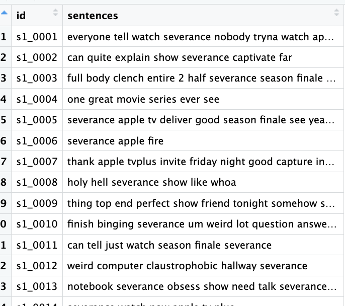
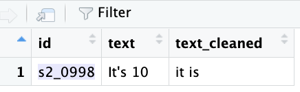

Lemmatization
Also known as word reduction, lemmatization is the process of transforming words into their base or dictionary form (lemma) to identify similarities in meaning and usage across different contexts. Take the word “run” as an example. It can appear in various forms like “ran”, “runs”, “running”, and “runner”. But the variations don’t stop there, as it includes complex forms like “outrun”, “overrun”, or “underrun”. These variations make it challenging for computers to process natural language effectively unless they can recognize that these words are related. That’s where lemmatization comes in; it helps machines group related words together by reducing them to a common root present in the dictionary, enabling better understanding and analysis of text.
You might be wondering: what about stemming? Stemming is a simpler but more aggressive process that removes prefixes and suffixes to reduce words to their root forms. It is generally considered less precise than lemmatization because it can sometimes produce meaningless words. For example, while “ran” and “runs” would correctly stem to “run,” the word “running” would be reduced to “runn.”
For this reason, we will stick with lemmatization and skip stemming in our pipeline. That said, if you need to process very large volumes of text and want a faster, more efficient approach, stemming could be a reasonable alternative.
An important thing to consider is that we look into words as separate units (tokens) as we saw in the previous episode. For example, think about the word “leaves”. That could both represent the plural of the noun “leaf” or the verb in third person for the word “leave”. That is a good reminder of always remember to apply part of speech (POS) because lemmatization algorithms utilize a lexicon with linguistic rules based on pre-determined tags to avoid misinterpretation.
Part of Speech (POS) refers to the grammatical category that a word belongs to, indicating its syntactic function and role within a sentence. For example, the word run can serve as a verb in “I like to run every morning” or as a noun in “I went for a long run”. Without POS information, an NLP system might incorrectly treat run as always being a verb, producing inaccurate results. By applying POS tagging, systems can correctly recognize each word’s role, ensuring more accurate text processing.
Alright, back to our pipeline, we will now convert words to their dictionary form, remove any remaining noise, and finalize our preprocessing steps.
Rebuilding Sentences (Comments)
After tokenization, our data consists of individual words. However, in order to preserve the ability to apply lemmatization while taking into account each word’s part of speech (POS), we need to first reconstruct sentences; otherwise, the lemmatizer would operate on isolated tokens without context, which can lead to incorrect or less accurate base forms.
To ensure the words are reassembled in the correct order for each original text, we rely on the ID column. Having an ID column is crucial because it allows us to track which words belong to which original text, preventing confusion or misalignment when reconstructing our comments into sentences, especially in large or complex datasets.
rejoined <- nonstopwords %>%
group_by(id) %>% # group all tokens from the same sentence
summarise(comments = paste(word, collapse = " "), .groups = "drop")Applying Lemmatization
Next, we will be using creating a new dataframe named lemmatized using the lemmatize_strings() function from the textstem package, and a new column called comments to it, containing the dictonary form of each word.
# Applying Lemmas
lemmatized <- rejoined %>%
mutate(comments = lemmatize_strings(comments))Great! Let’s take a look at the lemmatized data frame. For example, words such as “telling” and “captivating” were converted into “tell” and “captivate”.

Wait a second! If we look closely, we’ll notice an outlier lemma. Do you see the number two in the third row? This is a known issue with the textstem package. While it hasn’t been fully resolved yet, we can apply a workaround to address it:
custom_dict <- as.data.frame(lexicon::hash_lemmas)
# Find rows where token is "second"
idx <- custom_dict$token == "second"
# Set lemma = token to preserve the word
custom_dict$lemma[idx] <- custom_dict$token[idx]
# Now lemmatize your text
lemmatized_nonumbers <- rejoined
custom_dict <- as.data.frame(lexicon::hash_lemmas, stringsAsFactors = FALSE)Let’s look at the third row once again in the new dataframe we have created.
Alright! Problem solved. Keep in mind, however, this would apply to most words referring to numbers, but to save us time let’s address only this specifc case.
Saving your Work for Analysis
Let’s save our work as a new file named comments_preprocessed:
# Save to CSV
write.csv(lemmatized_nonumbers, "./data/preprocessed/comments_preprocessed.csv")Before we go
If you notice that the output object saved as comments_preprocessed contains one fewer row (observation) than the original dataset, this is because, after applying normalization and stopword removal with the Snowball Lexicon, the comment associated with ID "s2_0998" became an empty string.

Well done! That concludes all our preprocessing steps. Let’s now cover some important considerations for your future text preprocessing projects.